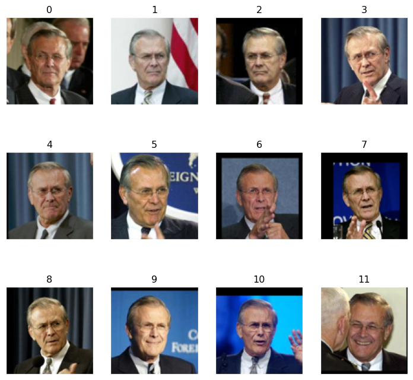

L’objectif de ce TP est de mettre en pratique la technique de classification Support Vector Machine (SVM) sur des données réelles et simulées au moyen du package scikit-learn et d’apprendre à contrôler les paramètres garantissant leur flexibilité.
1.2. Notations et formules
Nous rappelons les définitions, notations et formules suivantes :
\(\mathcal Y\) : ensemble des étiquettes…
Overfitting :
1.3. Méthode Support Vector Machine
Les Vector Support Machine (SVM) sont un ensemble de méthodes d’apprentissage supervisé utilisées pour la classification, la régression et la detection de valeurs abberantes.
Les SVM reposent sur deux idées clés : la notion de marge maximale (distance entre la frontière de séparation et les échantillons les plus proches) et celle de fonction de noyau (opérateur linéaire défini à l’aide d’une intégrale paramétrique sur certains espaces fonctionnels).
Leurs avantages sont qu’elles sont efficaces dans les espaces en grande dimension (lorsqu’il y a plus de variables que d’individus), plusieurs fonctions de noyaux peuvent être utilisées.
Cependant, les SVM ne fournissent pas directement d’estimations de probabilité, il faut les calculer à l’aide de validation croisée.
2. Mise en oeuvre - Iris
Nous commençons tout d’abbord par importer les packages qui nous serons nécessaires pour la suite de ce TP.
Nous cherchons ici à écrire un code qui va classifier la classe \(1\) contre la classe \(2\) du dataset iris en utilisant les deux premières variables et un noyau linéaire.
Pour cela, nous commençons par importer les données issues du dataset précédemment cité. Puis nous ne conservons que les deux premières variables.
Code
iris = datasets.load_iris()X = iris.dataX = scaler.fit_transform(X)y = iris.targetX = X[y !=0, :2] # garder les deux premières colonnes et enlever la 0y = y[y !=0] # garder la classe 1 et 2
Ensuite, nous devons laisser un quart des données de côté pour évaluer la performance en généralisation du modèle. Dans ces données, nous allons les séparer en un groupe d’entraînement (\(75\%\)) et un groupe de test (\(25\%\)). Pour ce faire, nous avons décidé d’utiliser la fonction test_train_split qui permet de mélanger automatiquement les données, ce qui est important pour éviter les biais (si les données iris sont ordonnées par classe par exemple). Puis nous avons fixé la graine comme \(42\) afin d’assurer la reproductibilité.
Maintenant que nos données sont correctement mélangées et séparées aléatoirement, nous allons pouvoir évaluer la performance en généralisation du modèle à partir d’une noyau linéaire. Ce noyau permet de chercher une frontière de décision linéaire (droite en \(2\)D).
Le l’hyperparamètre \(C\) que nous devons choisir (le meilleur possible) est la marge, elle doit faire un compromis entre : - \(C\) petit : marge large mais tolère plus d’erreurs. - \(C\) grand : marge étroitre mais moins d’erreurs d’entraînement (risque d’overfitting).
Code
# fit the model and select the best hyperparameter Cparameters = {'kernel': ['linear'], 'C': list(np.logspace(-3, 3, 200))} # teste 200 valeurs de C (de 0.001 à 1000)svr = svm.SVC()clf_linear = GridSearchCV(svr, parameters) # teste toutes les combinaisons de paramètresclf_linear.fit(X_train, y_train) # validation croisée# compute the scoreprint('Generalization score for linear kernel: %s, %s'% (clf_linear.score(X_train, y_train), # données de train clf_linear.score(X_test, y_test))) # données de test
Generalization score for linear kernel: 0.7466666666666667, 0.68
Nous savons qu’un bon modèle a un score de test proche de celui du train (ce qui veut dire qu’il n’y a pas d’overfitting).
Nous pouvons voir que le score pour le noyau linéaire des données d’entraînement est de \(0,75\) (\(75\%\)) alors que celui pour les données de test est de \(0,68\) (\(68\%\)).
La performance sur le train n’est pas excellente, en effet elle n’est que de \(75\%\) ce qui indique que le modèle a un peu de mal à séparer les deux classes.
Cependant, le fait qu’il n’y ait qu’une diminution de \(7\%\) entre les données d’entraînement et celles de test est plutôt encouragement. En effet, il est normal qu’il y ait une petite baisse sur des données qui n’ont jamais été vues.
Donc, comme les scores ne sont pas très élevés mais restent assez proches les uns des autres, nous pouvons en déduire que le modèle à noyau linéaire généralise moyennement. Le problème pourrait venir du fait que les classes ne se chevauchent probablement pas de manière linéaire et, comme nous utilisons un noyau linéaire, nous traçons une droite pour faire la séparation. De plus, peut être que les deux premières classes ne suffisent pas à bien discriminer les deux espèces.
Question 2. Noyau polynomial
Afin de comparer nos performances de généralisation du modèle entre plusieurs noyaux, nous allons faire un SVM basé sur un noyau polynomial.
Code
# Q2 polynomial kernelCs =list(np.logspace(-3, 3, 5)) # teste 5 valeurs de C (de 0.001 à 1000)gammas =10.** np.arange(1, 2)degrees = np.r_[1, 2, 3] # polynômes de degrés 1, 2, 3# fit the model and select the best set of hyperparametersparameters = {'kernel': ['poly'], # noyau polynomial'C': Cs, # 5 valeurs de C'gamma': gammas, # 1 valeur (10.0)'degree': degrees} # 3 valeurssvr_poly = svm.SVC() # vecteur videclf_poly = GridSearchCV(svr_poly, parameters) # teste les combinaisons avec validation croiséeclf_poly.fit(X_train, y_train) # entraine les modèles et sélectionne le meilleurprint(clf_poly.best_params_)print('Generalization score for polynomial kernel: %s, %s'% (clf_poly.score(X_train, y_train), clf_poly.score(X_test, y_test)))
Nous pouvons voir que nous obtenons exactement les mêmes scores pour le noyau polynomial que ceux que nous avions obtenu pour le noyau linéaire. En effet, nous pouvons voir des scores de \(0,75\) pour le train et de \(0,68\) pour les données de test.
Si nous regardons les hyperparamètres choisit par le modèle, nous pouvons voir que cette similarité n’est pas une coïncidence. En effet, elle s’explique par le choix des hyperparamètres optimaux sélectionnées par GridSearchCV pour le noyau polynomial.
Le paramètre important à regarder ici est le degré. Nous pouvons voir que c’est un noyau polynomial de degré \(1\) qui a été choisi, ce qui équivalent à un noyau linéaire et c’est donc pour cela que nous obtenons les mêmes résultats au niveau des scores.
Ainsi, cette sélection automatique du degré \(1\) par la validation croisée indique que la forntière de décision optimale pour séparer les classes \(1\) et \(2\) d’Iris (avec les deux premières variables) est effectivement bien linéaire. Les degrés supérieurs testés ont sûrement donné de moins bonnes performances, probablement en raison d’un surapprentissage.
Cela suggère que les données de ces deux classes d’Iris sont linéairement séparables dans l’espace défini par les deux premières variables, ce qui justifie l’efficiaté du noyau linéaire pour ce problème de classification.
Afin de vérifier ces résultats, nous allons les tracer en utilisant frontiere.
Ainsi, les graphiques confirment visuellement notre analyse précédente : les fronrières de décision pour les noyaux linéaire et polynomial sont identiques.
Nous voyons que la frontière de décision est une droite linéaire qui sépare l’espace en deux régions distinctes (bleue et orange). La distribution des données montre qu’il n’y a pas de courbure complexe visible, ce qui justifie que les noyaux polynomiaux de degré supérieurs n’ont pas été sélectionnés.
De plus, nous observons un chevauchement partiel entre les deux classes (les points bleus et oranges sont mélangés dans certaines zones) ce qui explique pourquoi les scores de classification ne sont pas parfaits ($75% et \(68\%\)).
3. Mise en oeuvre - SVM GUI
3.1. Question 3.
Dans cette question, nous nous basons sur une application qui permet, en temps réel, d’évaluer l’impact du choix du noyau et du paramètre de régularisation \(C\).
Pour commencer, nous lançons le script svm_script.py. Ensuite, nous créons un dataset très déséquilibré avec \(35\) points bleus (\(92\%\)) et \(3\) points noirs (\(8\%\)) en essayant de marquer la différence entre la localisation des points bleus et noirs (tout en gardant des débordements).
Figure 1: Influence du paramètre C sur un dataset déséquilibré avec noyau linéaire
Pour \(C = 10\) : l’hyperplan est légèrement en diagonal et minimise les erreurs sur toutes les classes (les points noirs sont tous classés ensemble).
Pour \(C = 1\) : l’hyperplan est en diagonale et fait un vrai compromis entre les deux classes. Comme celui avec \(C\) plus élevé, il arrive bien à séparer à la fois les bleus et les noirs.
Pour \(C = 0,1\) : l’hyperplan est quasiment à la verticale, il n’y a que deux points noirs qui sont ensemble et le troisième est mal classé.
Pour \(C = 0,01\) : l’hyperplan est également à la verticale, il a l’air d’ignorer les points noirs et se contente de séparer les points bleus.
Nous pouvons voir que les \(C\) élevés (\(10\) et \(1\)) semblent proches, de mêmes que les \(C\) faibles (\(0,1\) et \(0,01\)). Nous voyons que les premiers prennent bien en compte les points minoritaires et les classes de la bonne manière. A contrario, les deux derniers semblent très tolérant aux erreurs : comme les bleus sont majoritaires, ils optimisent uniquement pour eux et abandonnent les noirs.
Ainsi, nous pouvons en conclure que, lorsque nous diminuons \(C\) sur un dataset déséquilibré avec un noyau linéaire, l’hyperplan se déplace pour favoriser la bonne classification de la classe majoritaire et pour maximiser la marge, au détriment de la classe minoritaire. Avec \(C\) très faible, le modèle ignore presque complétement les points noirs.
Cela s’expliquer car le paramètre \(C\) contrôle le coût des erreurs de classification. Avec \(C\) faible, le modèle préfère un hyperplan simple (avec une grande marge) quitte à faire des erreurs. Sur des données déséquilibrés, ces erreurs affectent principalement la classe minoritaire car elle a moins d’influence sur l’optimisation.
4. Mise en oeuvre - Classification de visages
Dans cette partie, nous utilisons une base de données extraite de “Labeled Faces in the Wild” afin d’exposer un problème de classification de visages.
Nous commençons donc par télécharger la base de données qui nous intéresse.
Code
# Download the data and unzip; then load it as numpy arrayslfw_people = fetch_lfw_people(min_faces_per_person=70, resize=0.4, color=True, funneled=False, slice_=None, download_if_missing=True)# data_home='.'# introspect the images arrays to find the shapes (for plotting)images = lfw_people.imagesn_samples, h, w, n_colors = images.shape# the label to predict is the id of the persontarget_names = lfw_people.target_names.tolist()
Puis, nous choisissons une paire de personnes à classer : Donald Rumsfeld et Colin Powell.
Code
# Pick a pair to classify such asnames = ['Donald Rumsfeld', 'Colin Powell']idx0 = (lfw_people.target == target_names.index(names[0]))idx1 = (lfw_people.target == target_names.index(names[1]))images = np.r_[images[idx0], images[idx1]]n_samples = images.shape[0]y = np.r_[np.zeros(np.sum(idx0)), np.ones(np.sum(idx1))].astype(int)# plot a sample set of the dataplot_gallery(images, np.arange(12))plt.show()

Et nous continous en divisant les données en deux sous-ensembles : un ensemble d’entraînement (train) et un ensemble de test (test).
4.1. Question 4.
…
On peut voir qu’il y a \(91,6\%\) de précision sur l’ensemble de test ce qui est une très bonne performance pour la classification de nos visages. Cela signifie que le modèle préidt correctement l’identité de la personne dans \(92\%\) des cas.
De plus, nous voyons que la courbe montre trois zones distinctes : - Pour \(C < 10^{-4}\) : les scores sont faibles. La régularisation est excessive,le modèle est trop simple et sous-apprend. De plus, la marge doit être trop large ce qui permet trop d’erreurs. - Pour \(10^{-4} ≤ C ≤ 10^{-3}\) : les scores augmentent jusqu’à un pic optimal (pour \(C = 0,001\)). Nous avons le meilleur compromis biais-variance car le modèle capture la structure des données sans sous ou sur apprendre. - Pour \(C > 10^{-3}\) : les scores diminuent légèrement et se stabilisent en un plateau. La performance n’augente plus car le modèle est déhç suffisamment complexe. Donc, augmenter \(C\) ne sert plus à rien et nous risquons de faire apparaître du sur-apprentissage.
Ainsi, le SVM avec \(C = 0.001\) et le noyau linéaire offre une très bonne performance (\(91.6%\)) pour cette tâche de reconnaissance faciale. Il y a probablement du bruit ou des variations dans les images (éclairage, expression, etc.) ce qui permet qu’un \(C\) pas trop grand aide à ignorer ce bruit. En effet, le fait que la performance n’augmente pas pour des C plus grands suggère que le noyau linéaire capture bien la structure des données dans l’espace des caractéristiques.